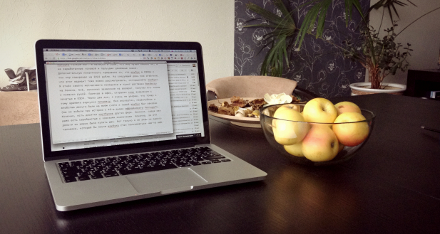
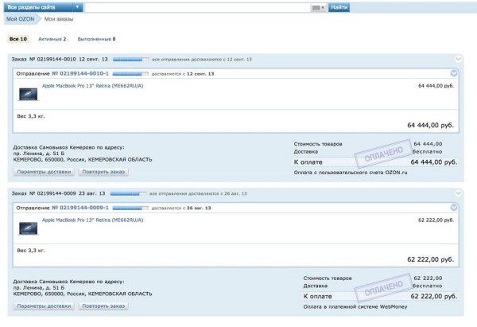

«Здравствуйте, я поклонник техники, производимой компанией Apple». Звучит, как признание в обществе анонимных алкоголиков. Сотни тысяч андроидолюбов и виндофилов думают, что поклонники компании Apple действительно ненормальны в своей любви. Это правда.

Так получилось, что начал любить компанию Apple я, по привычке, не с обычной стороны. Флагмана потребления, Айфона, у меня нет до сих пор.
Почти год назад я окончательно устал от тормозов существующего домашнего компьютера и, заехав в кемеровский Рестор, с его кемеровскими ценами, в сердцах купил моноблок IMac. Интерфейсы Мака пришлись мне по душе, и я начал готовить себя к покупке айфона, купив за 12 тысяч айпод из Америки.
Если твой айфон захворал, тебе помогут в
I-Center.
670-390, Рукавишникова, 9а
О надёжности техники Apple ходят легенды. Через примерно 3 месяца после покупки аймака, в правом верхнем углу монитора под стеклом появилось серое пятно, похожее на копоть. Я погуглил, оказалось такое бывает не только у меня. Зашёл при случае в Re-Store, поинтересовался, что делать. Они говорят, несите нам на 45 дней, в соответствии с Законом о защите прав потребителей.
Так как потреблять что-то кроме аймака мне не хотелось, а пятно это в работе и отдыхе практически не заметно, я решил повременить с экспедированием товара ненадлежащего качества продавцу.
Кнопка «Home» у айпода сломалась через примерно 10 месяцев. Отремонтировал за 1500 рублей.
Душа была неспокойна. Руки требовали мобильного решения. Решение заставило себя долго ждать, но было. 3 сентября после недельной доставки из магазина Озон мне пришёл Macbook 13" с SSD винчестером на 256 гигабайт и retina-дисплеем. 6 сентября Macbook перестал включаться. Купленный за 62222 рубля в интернет-магазине легендарный макбук стал просто декором. Абсолютный рекорд, считаю. Дальнейшие события развивались весьма неожиданно.
По натуре я человек неспокойный. В пылу жажды макбука даже хотел ехать в субботу в Новосибирск, срочно его ремонтировать (думаю, на макбуки есть мировая гарантия), потом хотел отправить его с вызвавшимся помочь Сергеем Спицыным (спасибо, Сергей). Потом начал думать головой и попробовать пойти логичным для других путём.
Примерно 2156 булок хлеба я мог бы купить вместо макбука
Написал письмо в ОЗОН, объяснил ситуацию. Там сказали, что нужно возвращать макбук обратно. Доставку до 1500 рублей, согласились оплатить. Обещали вернуть деньги + сделать 10-процентную скидку на книги. Я начал думать дальше. Деньги у меня уже были. А макбука толком нет. Я написал в ОЗОН, что мне нужен именно он, а не заработанные головой и пальцами денежные знаки. Дополнительную пикантность придавало то, что макбук в ОЗОНе с тех пор подорожал на 2222 рубля. На следующий день мне ответили, что этот вариант тоже можно рассматривать, «отправляйте макбук».
Я отнёс своего молчаливого помощника в пункт доставки BoxBerry на Ленина, 51Б, заполнил заявление на возврат, получил его копию и помахал рукой. Приехав в офис, отправил скан заявления с печатью в ОЗОН.

Через два дня, я очень не уверен, что товар к тому времени вернулся продавцу, без экспертиз, нервотрёпок и жлобства деньги были на моём счёте и новый макбук был заказан (вы не забыли про историю с 45-ю днями оффлайнового Рестора?).
Конечно, есть десятки ноутбуков других фирм. Конечно, среди них даже есть серебристые с плоскими кнопочками. Конечно, за эти деньги их можно было купить два. Вот только я не знаю ни одного человека, который бы после макбука стал пользоваться чем-то ещё.